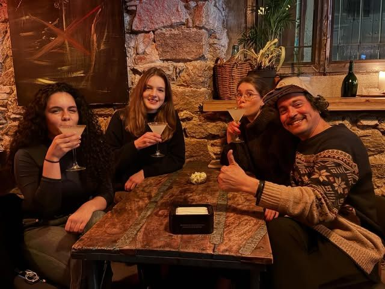
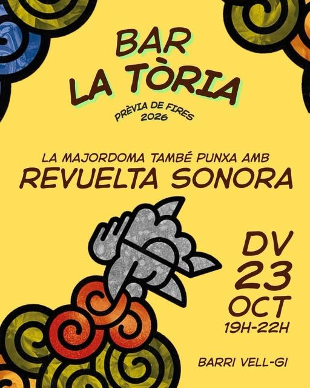
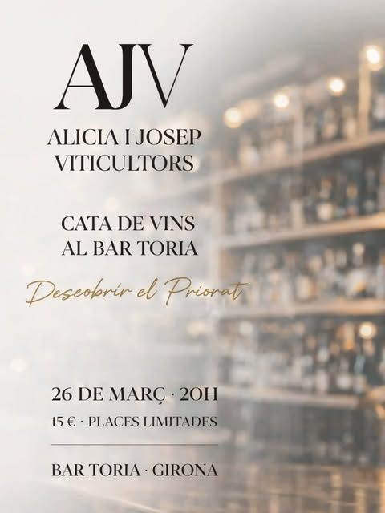
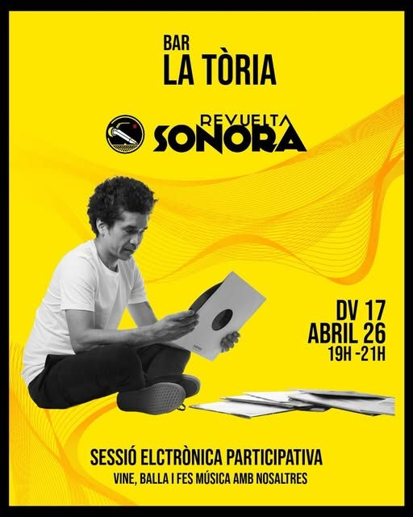
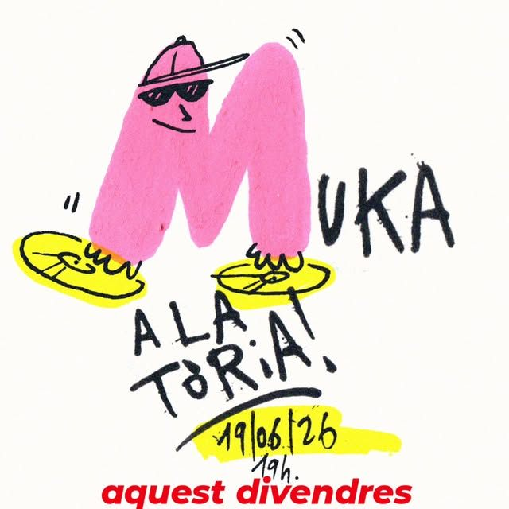

Vinos
Vinos para acompañar las tapas. De vez en cuando, catas con los propios viticultores.
Bar · Barri Vell · Girona
De lunes a sábado, de 18 a 24 h, en la Plaça Bell-lloc. Cocina abierta hasta las 23 h, música, sesiones de vinilo y catas.

DJs, sesiones de vinilo de jazz, música electrónica participativa y catas de vino. La agenda, siempre al día en Instagram.




¿Cumpleaños, cena de amigos, despedida? Escribe qué celebráis y te hacemos el cartel, como los nuestros. Descárgalo y envíanoslo por Instagram para reservar.